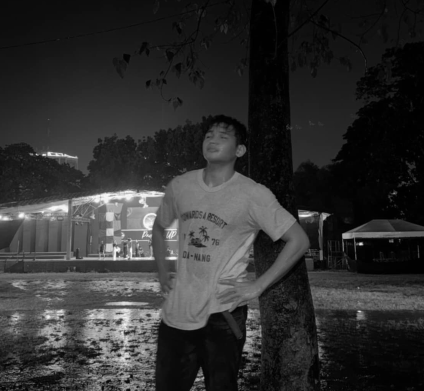

Hello, I'm Randall A. Alquicer

About me
Hello, I’m Randall A. Alquicer, a third-year Computer Science student with a strong passion for software development. Alongside my studies, I work as a software developer, applying my knowledge to real-world projects. My primary interests lie in artificial intelligence, data science, game development, and creating software that has a meaningful impact. I am driven by the desire to build solutions that not only push the boundaries of technology but also improve the user experience and solve tangible problems. With a deep commitment to continuous learning, I strive to grow both as a developer and as a professional in the tech industry.